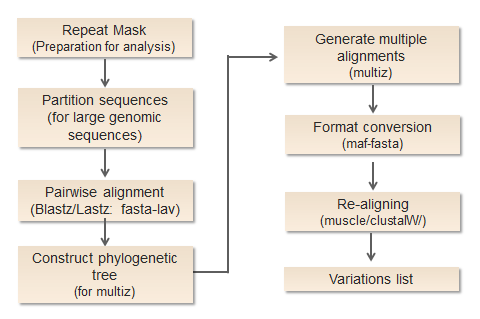

Multiple Genome Alignment

Repeat mask： procedure is operated to ensure that align programs will not be confused by similar sequences. Before alignment，all of the sequences used to construct alignments should be identified and annotated against a repeats library in order to make all repetitive elements masked. The software we use here is RepeatMasker, and it may take a relative long run time for large sequences.
Pairwise alignment: Sequences from different species are firstly pairwise aligned with Lastz. It’s previous version, Blastz, was initially designed as underlying alignment program of PipMaker server and has been widely employed in numerous science websites such as EnsemblGenomes (https://www.ensembl.org/) and UCSC Genome Browser (https://genome.ucsc.edu/). A distinct advantage of Blastz/Lastz is its sensitivity in comparison for a large percentage of neutrally evolving regions. Since many genomic sequences have no apparent traces of natural selection, that feature is suitable for whole genome sequence alignments. In contrast with it, most existing programs are not competent to detect those segments at genome-wide scale. This step takes FASTA sequences as input and produces output in its own format lav.
Chaining and netting: After primary alignments, we apply the chaining algorithms to building chains of related fragments. Since many fragments might match with several others, the strategy is to keep the longest one. Chaining is also used to eliminate some redundant alignments and poor quality fragments. Then, extended chain alignments are further linked into larger blocks by netting. The format of the result files are axt.
Mafing: Convert previous step result to MAF format. MAF format contains genomic location information for aligning sequence blocks, which is convenient for further analysis.
Construct phylogenetic tree: Users may choose to submit a phylogenetic tree of input genomes, or to use the phylogenetic tree constructed by our programs for next step. The tree will provide a reference for the combination of multiple alignments.
Combine multiple pairwise results: Pairwise alignment results are grouped to generate multiple alignments by Multiz. Multiz is a phylogenetic tree directed alignment tool, it uses the tree constructed previously and start with sequences closely related on evolution scale. This step is not needed if you just have two genomes.
Re-aligning: Since the combination of pairwise alignments may give rise to new gaps and alignment disruption, we take another process of re-align to fix this problem and make sure that sequences of all species are well-aligned. There are two sequence alignment methods for users to select depending on their needs.